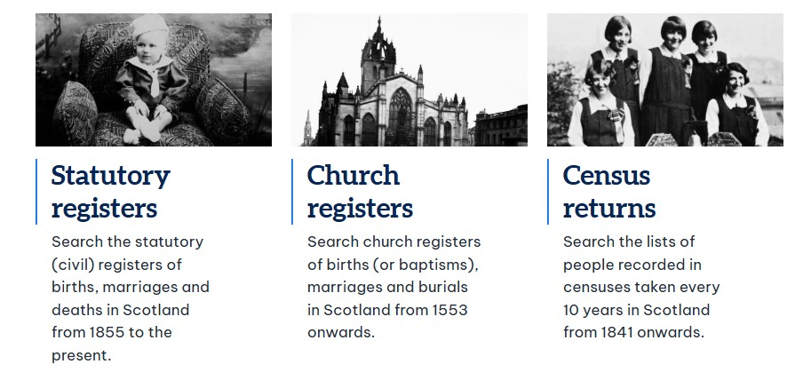
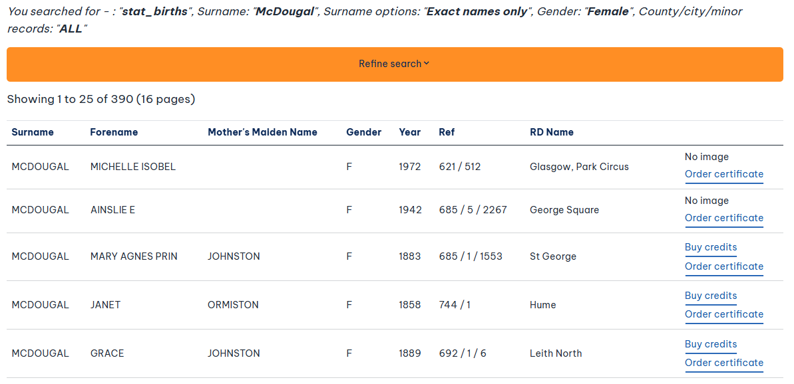
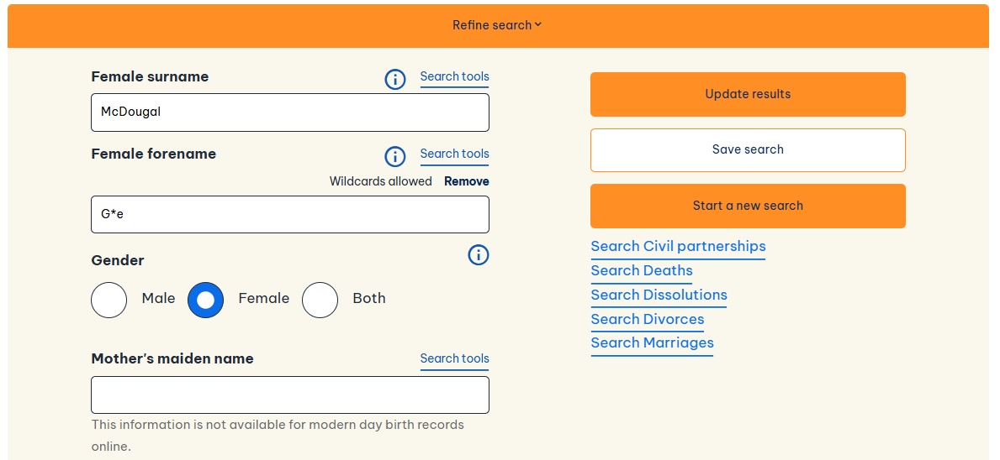

For Scottish family history, Scotland's People is usually one of my first stops. It holds Scottish civil registration records, censuses, church registers and other records that can help put a family together. Searching the indexes is free, but many of the original images cost credits. It pays to check a few details before opening one.
I'll go through what is on the site, how I search it and when I think an image is worth paying for. Start with what you know about your ancestor and choose the section that covers the period you are researching.
What is Scotland's People?
Scotland's People is the official family-history site run by National Records of Scotland. It lets you search Scottish records held by public archives and partner collections. You can choose a record category and, for many older entries, view a scan of the register page.
You need an account to search the records. Bear in mind that the index is only a starting point. A register image may give you a parent's name, a witness or an occupation that was not shown in the search result.

Which records can you find on Scotland's People?
Start with the date and the type of event. The records do not all cover the same years or places, and some collections cannot be searched by name. Here is what you can look for.
| Record type | Dates and details |
|---|---|
| Statutory births, marriages and deaths | From 1855. Civil records often name parents and give occupations, addresses or marital details. More recent images cannot be viewed online. |
| Church registers | From 1553 in the earliest surviving Old Parish Registers. Look for baptisms, banns and marriages, burials, and selected Roman Catholic and other church entries. Some parishes have large gaps. |
| Census returns | 1841–1921 online. These can show household members, approximate ages, jobs, addresses and birthplaces. Earlier returns contain less detail. |
| Valuation rolls | Selected years, 1855–1940. Look for property owners, tenants, occupiers, addresses and rental values. They do not name everyone living in a house. |
| Wills and testaments | 1513–1925 in the indexed collection. You may find executors, inventories, relatives or beneficiaries. Many people did not leave a will. |
| Other searchable collections | There are also servant tax rolls, prison registers, coats of arms, soldiers' and airmen's wills, Highland emigration records, Crofters and Cottars (Napier Commission) material, and selected employment or military records. |
| Virtual Volumes | These include kirk session records that you browse by place or record creator. Many are not indexed by individual name, so you will need to work through the pages. |
The site has record guides for checking what is included. A collection being listed does not mean every parish, prison or employer is covered, and the available collections may change.
What Scottish civil records can tell you
Birth registrations
You will usually see the child's date and place of birth, both parents' names (including the mother's maiden surname), the father's occupation and who registered the birth. Some older entries also give details of the parents' marriage.
Marriage registrations
These often give ages, jobs, addresses and marital status, as well as both sets of parents. Mothers' maiden surnames may be included too. That can help you identify the right family.
Death registrations
Look for age, occupation, marital status, cause of death, parents and the person who reported the death. Be cautious with parents' names. The informant may not have known them accurately.
Pay particular attention to 1855, the first year of civil registration. Some forms asked for details that were not routinely collected later, so it is worth reading every field.
Is Scotland's People free? Index searches, credits and certificates
Searching the historical indexes is free when you are signed in. To see many original images, you need to buy credits. Some browse-only collections, including kirk session Virtual Volumes, are free to view but require credits to save an image. Check the cost on the individual record before opening it, as prices and access rules can change.
Before I use credits, I check the year, place, parents if known, and registration district. I keep a note of possible matches and open an image when it might settle a particular question. There is no point paying to see every entry with the same name.

What to note before you search
I usually work backwards from the most reliable recent record. Note the full name, other spellings, approximate date, known place, spouse and parents, if you have them. For common surnames, an address or job may help. If your only Scottish birthplace comes from an overseas marriage or census, copy it as written, even if it just says “Scotland”.
Place names can cause trouble. A county, parish and registration district are different things. The district named in a civil index may not be the town where someone was born. Names and boundaries changed as well. If a place search comes up blank, try a broader area.
If the family moved across the Atlantic, my transatlantic genealogy guide covers ways migration records can point back to a British birthplace. If you are starting from scratch, see how to begin your family tree.
How to search Scotland's People
Go to Search the records and choose the collection first. Births, marriages, censuses and other records have their own search fields, so one search will not cover everything.
Start in the right collection
For a birth after 1854, use statutory births. A marriage in 1830 belongs in church banns and marriages. For a family in 1901, choose the 1901 census. Otherwise, you may be searching records that could never contain the event.
Use only the details you trust
Try the surname, a sensible range of years and a forename if you are sure of it. Leave the district, county or mother's maiden surname blank until you have a reason to include it. Too many fields can rule out the right result.
Try the name options
Under Refine search, you can use fuzzy matching, names that begin with certain letters and the asterisk (
*) wildcard. For instance,Ne*lmay pick up several surname spellings. It is also worth trying Mac, Mc and M' forms, or a shortened forename.Alter one thing at a time
If there are no results, remove a middle name, widen the dates or drop the place filter. If there are too many, add a parent, age or district you can back up with another record. Keep track of which change helped.
Check the index before spending credits
Look at all the likely matches. A name and a year may fit several people. Ask what the full record could tell you: parents, a spouse, a witness or an address. Then decide whether to open it.
Check the next record
A marriage may name parents. A census may show the household. A birth or church entry may help confirm the connection. If the name is common, look for siblings and neighbours too.

Read the original record, not just the index
The index helps you find a record, but it may leave out important details. Read the whole entry and, if useful, the entries around it. Check who reported the event or witnessed it. Compare names, addresses and jobs with other records, and allow for difficult handwriting or errors in the original information.
If you see a Register of Corrected Entries (RCE) reference, check it when available. A later correction can change what a birth, marriage or death entry tells you. The site covers this in its statutory register guide.
Scottish church records before 1855
Before civil registration, church records are often the place to start. The Old Parish Registers (OPRs) are surviving Church of Scotland records of births or baptisms, banns or marriages, and deaths or burials. The earliest date from 1553, but some parishes started recording much later and others have missing years. Scotland's People also has separate Roman Catholic registers and some records from other Presbyterian churches.
In Church registers, choose the event and select the church. The available parishes or congregations depend on that choice. Searching a Church of Scotland parish will not automatically search the Catholic records for the same area.
For the early 1800s and earlier, a name search may not be enough. Kirk session minutes can mention poor relief, discipline, family matters and other events in the community. Many can be browsed in Virtual Volumes, but usually not searched by a person's name. Start with a likely parish and date range, then work through the pages.
Scottish censuses and valuation rolls
Scotland's People has censuses from 1841 to 1921. They can show who lived at an address and what work they did. From 1851, the returns generally give more detail about relationships and birthplaces than the 1841 census. In 1841, ages for people over 15 were often rounded down to the nearest five, so treat those ages cautiously.
The census search lets you add another person's forename from the same page. This can narrow down a common surname. Check the original image, though: one census page may contain several different households.
Between census years, try the valuation rolls. The indexed years on the site are 1855, 1865, 1875, 1885, 1895, 1905, 1915, 1920, 1925, 1930, 1935 and 1940. They may give an owner's, tenant's or occupier's name and the property's rateable value. They are not lists of everyone in the household.
What to try if you cannot find someone on Scotland's People
A blank search does not necessarily mean the record is gone. Before changing the family tree, I would try the following.
- Try another spelling or forename. Switch between Mc and Mac, remove initials, leave the forename blank, or use fuzzy and wildcard searches.
- Try a wider year range. Census ages and ages on marriage or death records may be approximate, especially if someone else supplied the details.
- Check that you are in the right collection. Before 1855, a civil registration search will not help. For later events, start with statutory registers.
- Search without a place. The family might have moved, or the registration district may not be the one you expected.
- Look for someone else in the family. A sibling's birth, a spouse's death or a census entry may give you the missing clue.
- Check what has survived. Church registers have gaps. Kirk session volumes may need browsing, and some collections only cover certain places and years.
- Consider records outside Scotland. A family may have lived in England, Ireland or overseas, so an event could be recorded elsewhere.
If several records seem possible, resist selecting one based only on the name. My brick-wall genealogy guide discusses how to compare competing explanations and record unsuccessful searches.
Save the record and note where it came from
When I find an image I can use, I save it within the site's permissions. I also write down the record type, name, year, district or parish, reference or entry number, and date accessed. If the handwriting is unclear, I note that too. Keep track of the spellings and date ranges you have already searched so you do not repeat the same work.
Example of a research note (not a real record)
Scotland's People, [record type], [year], [district or parish], [name], [registration or volume reference], [entry or page if shown], image viewed [date]; [relevant URL or saved-image reference].
You can find more in my family-history research guides, including IrishGenealogy.ie and Antenati in Italy. They use different record systems, so the search methods are not quite the same.
If the records do not quite add up
Help with a difficult Scottish record
If you have two likely matches, a hard-to-read entry or a family you cannot follow between records, send me an enquiry with the names, dates and what you have checked so far. I can suggest where to look next.
Questions about Scotland's People
Can I search Scotland's People without paying?
Yes. With an account, you can search historical indexes for free. Many original images cost credits, but some browse-only volumes are free to view. Check the price before opening a record.
Why is the birth, marriage or death image missing when there is an index entry?
Statutory images have a 100-year limit for births, 75 years for marriages and 50 years for deaths, with new images released annually. For more recent records, you may need to order a certificate.
Does Scotland's People have every Scottish church register?
No. It includes many Old Parish Registers and selected Catholic and other church records, but some parishes and years are missing. Check the church and parish coverage before deciding there is no record.
Can I search kirk session minutes by name?
Not usually. Many kirk session records are in Virtual Volumes, which you browse by place or record creator rather than searching like a statutory index. A likely parish and period will help you narrow it down.
Scotland's People: official record guides
This guide draws on Scotland's People help pages, reviewed 29 October 2026. For current prices, newly released records or changes to the search screens, check the official website.